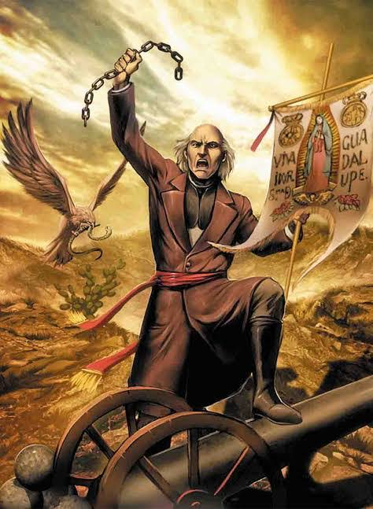
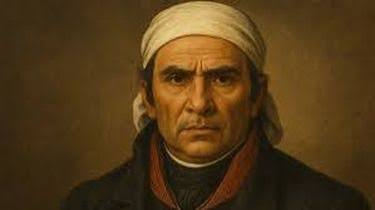
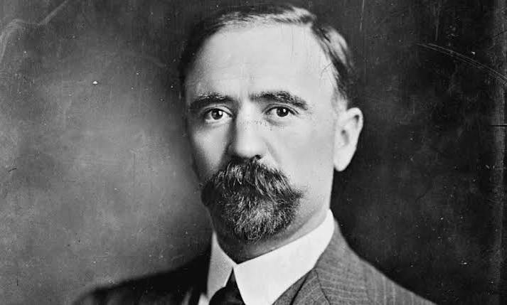
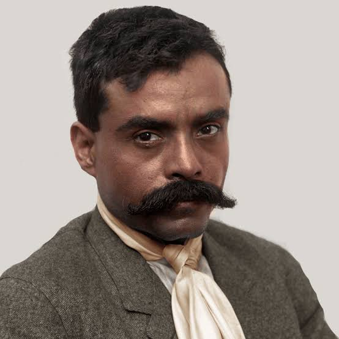
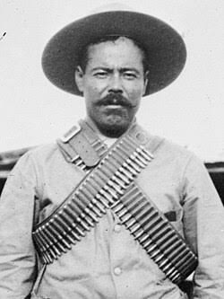

Conoce a algunos de los personajes más importantes de la Independencia y la Revolución Mexicana.

Fue el iniciador de la Independencia de México. El 16 de septiembre de 1810 dio el famoso Grito de Dolores para comenzar la lucha por la libertad.

Continuó el movimiento de Independencia después de Miguel Hidalgo y promovió el documento llamado Sentimientos de la Nación.

Fue uno de los principales líderes que inició la Revolución Mexicana en 1910 para buscar un cambio en el gobierno.

Defendió los derechos de los campesinos y es recordado por su lema: "La tierra es de quien la trabaja".

Fue uno de los principales líderes militares de la Revolución Mexicana y destacó por sus victorias en el norte del país.
Video sobre personajes importantes en la lucha de Independencia.